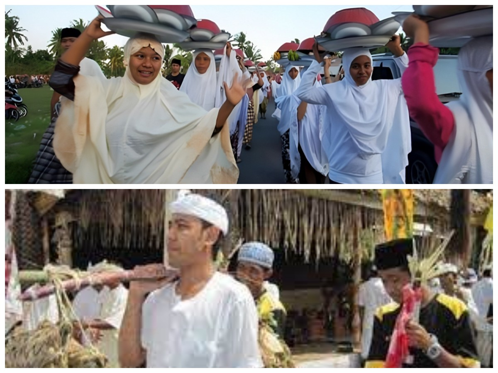
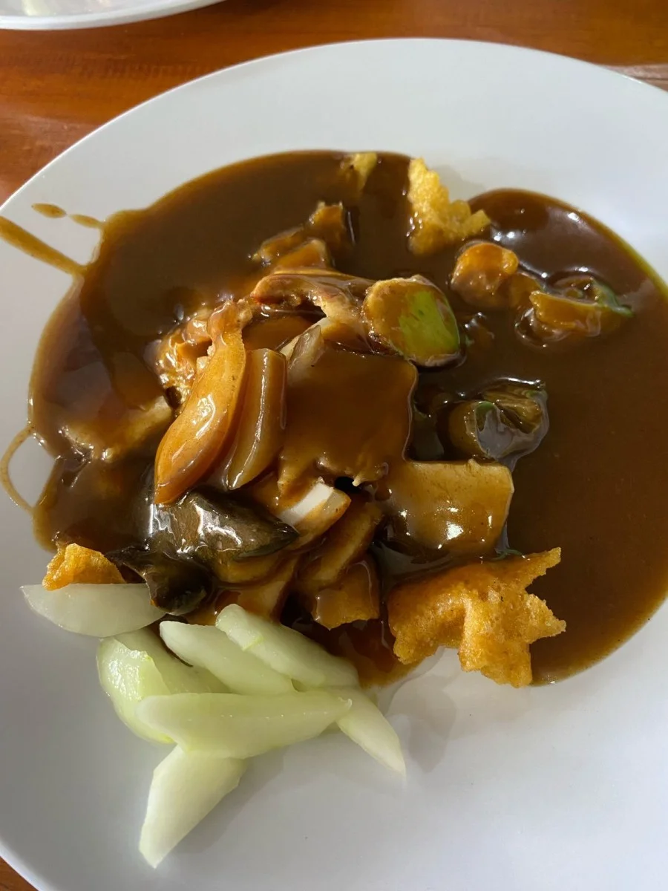
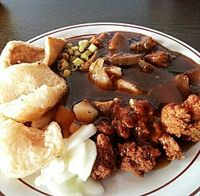
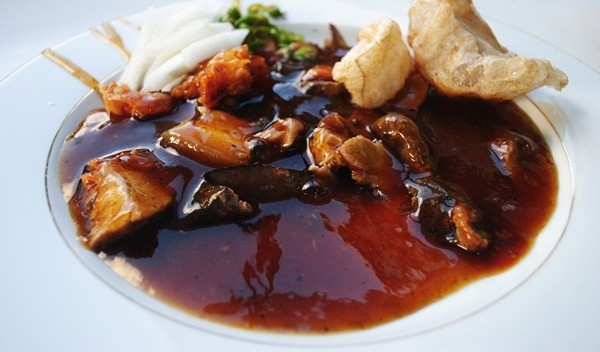

Buleleng (Kota Singaraja) bukan sekadar pusat pemerintahan. Ia adalah kota bersejarah di mana harmoni antar umat beragama, kesenian tingkat dunia, dan kuliner akulturasi berpadu sempurna.
Sebagai ibu kota kabupaten dan bekas ibu kota Kepulauan Sunda Kecil, Kota Singaraja menjadi melting pot berbagai suku, agama, dan budaya. Sejarahnya sebagai kota pelabuhan melahirkan toleransi tinggi dan asimilasi unik.
Buleleng memiliki gaya gamelan dan tarian yang sangat berbeda dari Bali Selatan. Jika kesenian Selatan cenderung halus dan mengalir, kesenian Buleleng (utara) dikenal meledak-ledak, dinamis, dan penuh tenaga — tercermin sempurna dalam gamelan Gong Kebyar.
Harmoni antar sesama, dinamika seni, hingga perpaduan cita rasa rempah.

Singaraja adalah simbol toleransi. Sebutan "Nyama Selam" untuk umat Muslim dan "Nyama Bali" untuk umat Hindu menggambarkan kedekatan persaudaraan yang terjalin ratusan tahun di kampung-kampung tua kota ini.
Lahir dan berkembang pesat di Buleleng pada awal abad ke-20. Musik gamelan yang sangat dinamis, menghentak, dan penuh improvisasi ini telah menjadi identitas seni budaya Bali yang paling terkenal di mata dunia.
Kuliner legendaris hasil perpaduan budaya Tionghoa dan bumbu lokal Bali. Terdiri dari daging babi (termasuk jeroan dan kerupuk kulit) yang disiram saus kental kaya rempah, sangat identik dengan kawasan Pecinan Singaraja.
Daging direbus lama dengan cengkeh, kayu manis, bawang putih, dan tauco hingga empuk. Keunikan utamanya ada pada siraman saus kental berwarna cokelat yang gurih, manis, dan sedikit pedas hangat dari lada.
Salah satu legenda hidup adalah Siobak Khe Lok yang mulai beroperasi sejak tahun 1963. Siobak bukan hanya hidangan, tapi jejak sejarah bertemunya perantau Tionghoa dengan kekayaan rempah lokal di kota pelabuhan Buleleng.
Disajikan dengan nasi putih atau lontong, irisan daging empuk, acar mentimun segar, sambal rawit, dan kerupuk babi garing untuk tekstur renyah.



Nikmati keindahan dan kekuatan gamelan Gong Kebyar, seni musik khas Buleleng yang lahir di Desa Jagaraga pada tahun 1915 dan kini menjadi identitas seni Bali di panggung internasional.
Penampilan Gong Kebyar duta Kabupaten Buleleng dalam Pesta Kesenian Bali (PKB). Gamelan ini dikenal dengan tempo cepat, dinamika keras-lembut yang kontras, dan improvisasi yang penuh energi.
Sumber: Dokumentasi Gong Kebyar
Seberapa baik Anda mengenal sejarah dan budaya di Buleleng Kota?
Pertanyaan 1
(Pilih semua jawaban yang benar)
Skor Akhir Anda: 0 / 2